AI TOOLKIT
AI工具包
01 / NO MAGIC
不用魔法
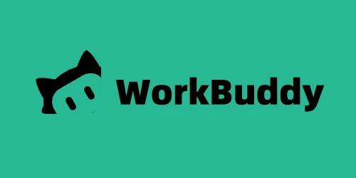
WorkBuddy
AI 智能协作助手，把日常任务交给 AI。
一键直达豆包
字节跳动自研的旗舰级多模态大模型，兼具智能交互、深度理解与全场景适配能力。
一键直达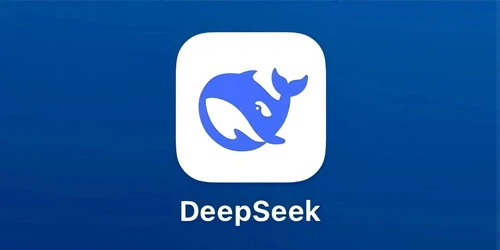
DeepSeek
深度求索打造的国产标杆级通用 AI 大模型体系，可实现高效推理与低成本训练。
一键直达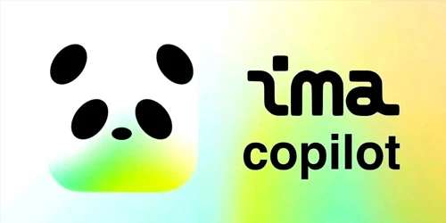
IMA
腾讯推出的以知识库为核心的 AI 智能工作台，支持个性化知识管理。
一键直达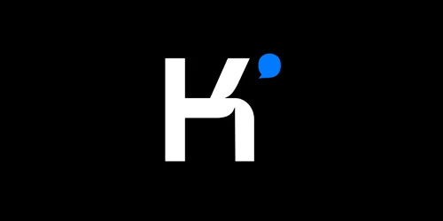
Kimi
月之暗面 Moonshot AI 推出的旗舰级多模态大模型，性能对标国际顶尖模型。
一键直达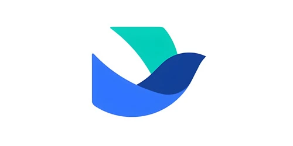
飞书
字节跳动推出的 AI 原生一站式企业协作与办公平台。
一键直达即梦
字节跳动旗下的一站式 AI 视觉创作平台，依托自研模型打造 AI 片场全流程工作流。
一键直达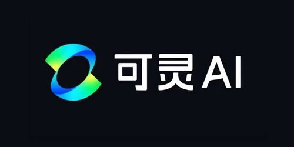
可灵
快手自研的多模态创作平台，支持文 / 图生视频、视频续写及高清图像生成。
一键直达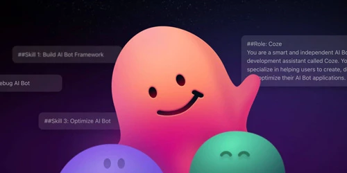
扣子
字节跳动推出的 AI 原生智能协作助手，深度融合飞书生态。
一键直达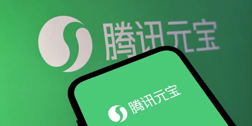
元宝
腾讯旗下混元 + DeepSeek 双模型驱动 C 端全能 AI 助手。
一键直达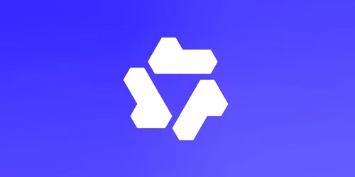
千问
阿里巴巴旗下基于 Qwen 系列大模型打造的旗舰级 C 端全能 AI 助手。
一键直达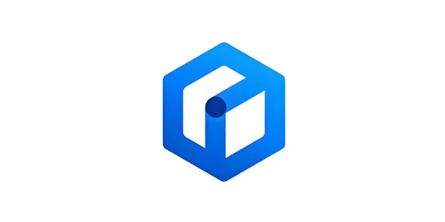
文心
百度文心大模型驱动的旗舰级原生全模态生成式 AI 助手。
一键直达02 / NEED MAGIC
需要魔法
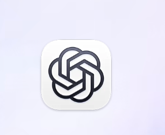
Codex
OpenAI 编程智能体，协助构建、修改与交付代码。
一键直达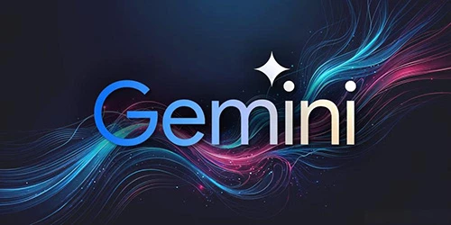
Gemini
谷歌旗舰级原生多模态大模型，主打深度推理与百万级上下文，高效处理多模态数据。
一键直达Midjourney
全球领先的 AI 图像生成工具，基于扩散模型实现文生图与多图创作。
一键直达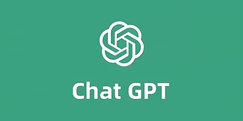
ChatGPT
OpenAI 推出的标杆式对话大模型，具备超强的自然语言理解与逻辑推理能力。
一键直达Notebook
AI 智能研究笔记工具，主打专属知识库闭环交互，支持多格式多模态输入。
一键直达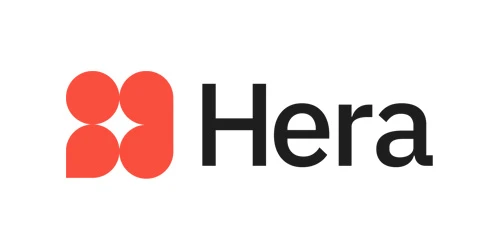
Hera
AI 动效设计云端平台，支持文生专业级动态图形与动画，内置海量模板。
一键直达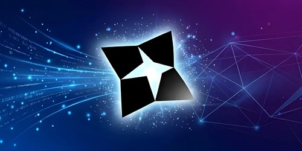
AnyGen
字节跳动推出的 AI 办公协作平台，覆盖办公全链路并生成可编辑可交付的结构化成果。
一键直达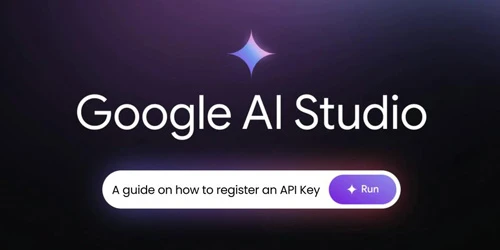
Google AI Studio
AI 集成开发平台，主打免费低代码 / 无代码体验，实现 AI 应用快速开发。
一键直达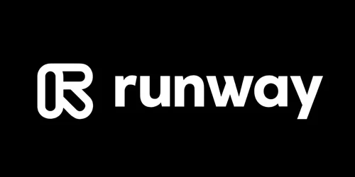
Runway
全球领先的 AI 多模态创意视频创作平台，支持文 / 图生专业级视频。
一键直达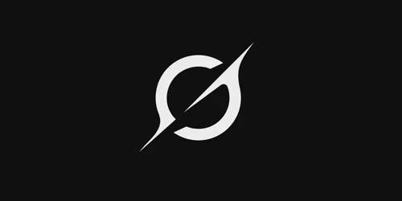
Grok
xAI 打造的旗舰级多模态 AI 大模型，深度整合 X 平台实现实时联网检索。
一键直达Suno
麻省理工团队打造的全球顶尖 AI 音乐创作平台，实现文 / 图 / 视频生完整歌曲。
一键直达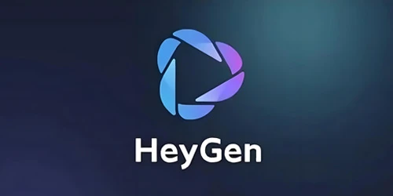
HeyGen
全球领先的 AI 数字人视频创作平台，低门槛实现内容创建、本地化与个性化。
一键直达 GitHub
GitHubGitHub
代码托管与开源协作平台，探索项目、管理代码与协同开发。
一键直达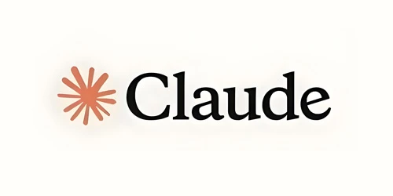
Claude
Anthropic 推出的旗舰级多模态大模型，具备超顶尖推理编码与多模态解析能力。
一键直达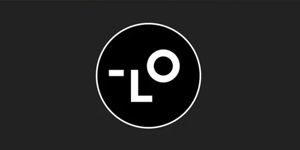
Lovart
Liblib 海外子公司研发的全球首个设计领域 AI 智能 Agent。
一键直达BAOX.AI · AI TOOLKIT
一键直达
不迷路
One click. Straight to what you need.